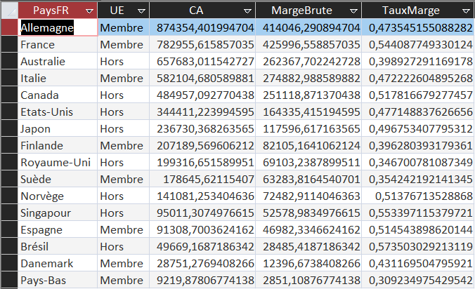
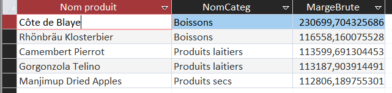
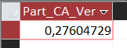
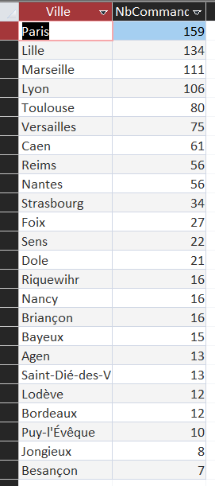

Un indicateur proposé par chaque membre de l’équipe : rentabilité, offre, emballage et livraison.
Chaque membre de l’équipe propose un indicateur lié à la rentabilité, à l’offre ou à l’environnement.
Gonçalo : marge selon le pays d’origine
Énoncé : pour chaque pays de fournisseur, donner le chiffre d’affaires, la marge brute
et le taux de marge, du plus élevé au plus faible chiffre d’affaires.
Objectif : comparer la rentabilité des pays d’origine.
Intérêt pour KDou : la France rapporte plus de marge par euro vendu que
de gros fournisseurs lointains : un argument commercial et écologique pour développer l’offre locale et
européenne.
Construction : FROM : cinq tables jointes jusqu’au pays du fournisseur. GROUP BY : pays
et statut UE. SELECT : le chiffre d’affaires, la marge brute (chiffre d’affaires moins coût d’achat) et
leur rapport, le taux de marge. Le transport et le stockage sont déjà dans le coefficient de marge.
SELECT Pa.PaysFR, Pa.UE,
Sum(D.[Quantité] * P.CoutAchat * Ca.CoefMarge * (1 - D.[Remise (%)])) AS CA,
Sum(D.[Quantité] * P.CoutAchat * (Ca.CoefMarge * (1 - D.[Remise (%)]) - 1)) AS MargeBrute,
Sum(D.[Quantité] * P.CoutAchat * (Ca.CoefMarge * (1 - D.[Remise (%)]) - 1)) / Sum(D.[Quantité] * P.CoutAchat * Ca.CoefMarge * (1 - D.[Remise (%)])) AS TauxMarge
FROM (((DetailCommande AS D INNER JOIN Produit AS P ON D.[Réf produit] = P.RefProd)
INNER JOIN Categorie AS Ca ON P.CodeCateg = Ca.CodeCateg)
INNER JOIN Fournisseur AS F ON P.NoFour = F.NoFour)
INNER JOIN Pays AS Pa ON F.NoPays = Pa.NoPays
GROUP BY Pa.PaysFR, Pa.UE
ORDER BY 3 DESC;

Chiffre d’affaires, marge brute et taux de marge selon le pays du fournisseur.
Interprétation : le taux de marge de la France est de 54 %, contre 47 % pour l’Allemagne
et l’Italie, les deux plus gros fournisseurs de l’UE, et 40 % pour l’Australie, premier fournisseur hors
UE. Acheter local rapporte donc davantage par euro vendu. Ce chiffre ne prouve pas à lui seul un impact
environnemental plus faible.
Timothee : les cinq produits les plus rentables
Énoncé : quels sont les cinq produits qui dégagent la plus forte marge brute depuis le
début de la base ?
Objectif : repérer les références qui font vivre l’entreprise.
Intérêt pour KDou : concentrer la communication sur les produits les
plus rentables et réexaminer ceux qui rapportent peu, afin de limiter le stock inutile.
Construction : GROUP BY regroupe toutes les lignes de commande d’un même produit. ORDER
BY 3 DESC est indispensable pour que TOP 5 donne les cinq meilleurs.
SELECT TOP 5 P.NomProd, Ca.NomCateg,
Sum(D.[Quantité] * P.CoutAchat * (Ca.CoefMarge * (1 - D.[Remise (%)]) - 1)) AS MargeBrute
FROM (DetailCommande AS D INNER JOIN Produit AS P ON D.[Réf produit] = P.RefProd)
INNER JOIN Categorie AS Ca ON P.CodeCateg = Ca.CodeCateg
GROUP BY P.NomProd, Ca.NomCateg
ORDER BY 3 DESC;

Classement des cinq produits ayant la marge brute cumulée la plus élevée.
Interprétation : Côte de Blaye arrive en tête avec environ 230 700 € de marge brute,
soit près du double du deuxième produit. Cette référence représente donc un produit particulièrement
important pour la rentabilité observée dans la base.
Aymen : part du chiffre d’affaires en verre ou en carton
Énoncé : quelle part du chiffre d’affaires vient des produits conditionnés dans du verre
ou du carton ?
Objectif : mesurer le poids des emballages jugés plus écologiques que le plastique.
Intérêt pour KDou : fixer un point de départ chiffré, puis un objectif
de progression de cette part pour renforcer l’image éco-responsable.
Construction : IIf compte la ligne de commande seulement si le conditionnement contient
« verre » ou « carton » (jokers * d’Access). Le résultat se met en forme de pourcentage dans Access.
SELECT Sum(IIf(P.QteParUnit LIKE "*verre*" OR P.QteParUnit LIKE "*carton*",
D.[Quantité] * P.CoutAchat * Ca.CoefMarge * (1 - D.[Remise (%)]), 0)) / Sum(D.[Quantité] * P.CoutAchat * Ca.CoefMarge * (1 - D.[Remise (%)])) AS Part_CA_Verre_Carton
FROM (DetailCommande AS D INNER JOIN Produit AS P ON D.[Réf produit] = P.RefProd)
INNER JOIN Categorie AS Ca ON P.CodeCateg = Ca.CodeCateg;

Part du chiffre d’affaires associée aux conditionnements en verre ou en carton : environ
27,6 %.
Interprétation : Les produits conditionnés en verre ou en carton représentent 27,6 % du
chiffre d’affaires calculé. Cet indicateur donne un point de départ pour suivre cette part, mais le type
d’emballage seul ne suffit pas à mesurer l’impact environnemental total.
Youssef : les villes qui regroupent le plus de commandes
Énoncé : quelles villes de clients ont passé plus de 5 commandes au total, de la plus
active à la moins active ?
Objectif : trouver les zones où regrouper les livraisons.
Intérêt pour KDou : mutualiser les livraisons dans les villes les plus
actives réduit les kilomètres parcourus et les émissions, en s’appuyant sur les clients pilotes.
Construction : GROUP BY regroupe par ville ; HAVING filtre les groupes selon le calcul
(WHERE ne peut pas le faire). Le seuil de 5 commandes est un choix de l’équipe.
SELECT Cl.Ville, Count(Co.[N° commande]) AS NbCommandes
FROM Clientele AS Cl INNER JOIN Commande AS Co ON Cl.CodeCli = Co.CodeCli
GROUP BY Cl.Ville
HAVING Count(Co.[N° commande]) > 5
ORDER BY 2 DESC;

Villes classées selon le nombre de commandes enregistrées.
Interprétation : Paris arrive en tête avec 159 commandes, suivie de Lille avec 134 et de
Marseille avec 111. Ces villes peuvent être étudiées en priorité pour envisager un regroupement des
livraisons, sous réserve de vérifier les adresses et les trajets réels.